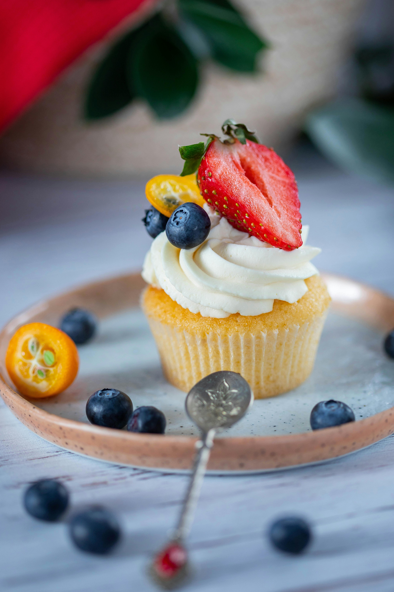

Marcela's Cupcakes Cookbook
Vanilla cupcakes
Total Time 30minutes Makes 6 cupcakes
Author Marcela

Ingredients
- 2 cups all purpose flour
- 2 cups sugar
- 3 tsp baking power
- 1 tsp salt
- 1 cup milk
- 1/2 cup vegetable oil
- 1 tsp vanilla extract
- 2 large eggs
- 1 cup water
Instructions
-
Preheat oven to 350°F (176°C) and prepare a cupcake pan with liners
-
Add the flour, sugar, baking powder and salt to a large mixer bowl
and combine. Set aside.
-
Add the milk, vegetable oil, vanilla extract and eggs to a medium
sized bowl and combine.
-
Add the wet ingredients to the dry ingredients and beat until well
combined.
-
Slowly add the water to the batter and mix on low speed until well
combined. Scrape down the sides of the bowl as needed to make sure
everything is well combined. Please note that the batter will be
very thin.
-
Fill the cupcake liners about half way and bake for 15-17 minutes,
or until a toothpick comes out with a few moist crumbs.
-
Remove the cupcakes from oven and allow to cool for 2 minutes, then
remove to a cooling rack to finish cooling.
-
To make the frosting, beat the butter in a large mixer bowl until
smooth.
-
Add 2 cups of powdered sugar and mix until smooth.
-
Add the vanilla extract and 1 tablespoon of water or milk and mix
until smooth.
-
Add remaining powdered sugar and mix until smooth.
-
Add remaining water or milk, as needed, and salt and mix until
smooth.
Chocolate cupcake
Total Time 20 minutes Makes 6 cupcakes
Author Marcela

Ingredients
- 4 tablespoons unsalted butter
- 1/4 vegetable oil
- 1/2 cup water
- 1 cup all purpose flour
- 1 cup granulated sugar
- 3/4 tsp baking soda
- 1/8 tsp kosher salt
- 1 large egg
- 1/4 cup cuttermilk
- 1 tsp pure vanilla extract
- 1/4 cup plus 2 tablespoons unsweetened natural cocoa powder
Instructions
-
Preheat the oven to 350°F (177°C). Line a 12-cup muffin pan with
cupcake liners. Line a second pan with 2 liners – this recipe makes
about 14 cupcakes. Set aside.
-
Whisk the flour, cocoa powder, espresso powder, baking powder,
baking soda, and salt together in a large bowl until thoroughly
combined. Set aside. In a medium bowl, whisk the eggs, granulated
sugar, brown sugar, oil, and vanilla together until completely
smooth. Pour half of the wet ingredients into the dry ingredients.
Then half of the buttermilk. Gently whisk for a few seconds.
Repeat with the remaining wet ingredients and buttermilk. Stir
until *just* combined; do not overmix. The batter will be thin.
-
Pour or spoon the batter into the liners. Fill only halfway
(this is imperative! only halfway!) to avoid spilling over the
sides or sinking. Bake for 18-21 minutes, or until a toothpick
inserted in the center comes out clean. Allow to cool completely
before frosting.
-
Frost cooled cupcakes with vanilla buttercream. You can swipe the
frosting on with an icing knife or use a piping tip such as Wilton
1M. Leftover cupcakes keep well covered tightly in the refrigerator
for 3 days.
Strawberry Cupcake
Total Time 18 minutes Makes 6 cupcakes Author Marcela

Ingredients
- 1/2 cup all purpose flour
- 2 tablespoons baking powder and baking soda
- 1 tsp salt
- 1/4 cup butter
- 1/8 tsp vanilla extract
- 3 large eggs
- 1/4 cup milk
- chopped strawberries
Instructions
-
Preheat the oven to 350°F and prepare a cupcake pan with cupcake
liners.
-
Combine the flour, baking powder, baking soda and salt in a medium
sized bowl and set aside.
-
In a large bowl, whisk the melted butter, sugar and vanilla extract
together until well combined.
-
Add the eggs, sour cream and milk one at a time, mixing well after
adding each. Adding them one at a time ensures they all incorporate
nicely, without giving you a lumpy batter.
-
Add the dry ingredients and whisk together until combined, but do
not over mix. You want the batter to be evenly mixed and smooth,
but don’t over do it or you could end up with tough cupcakes
-
Fold in the chopped strawberries gently. You don’t want to beat up
your strawberries or over mix the batter.